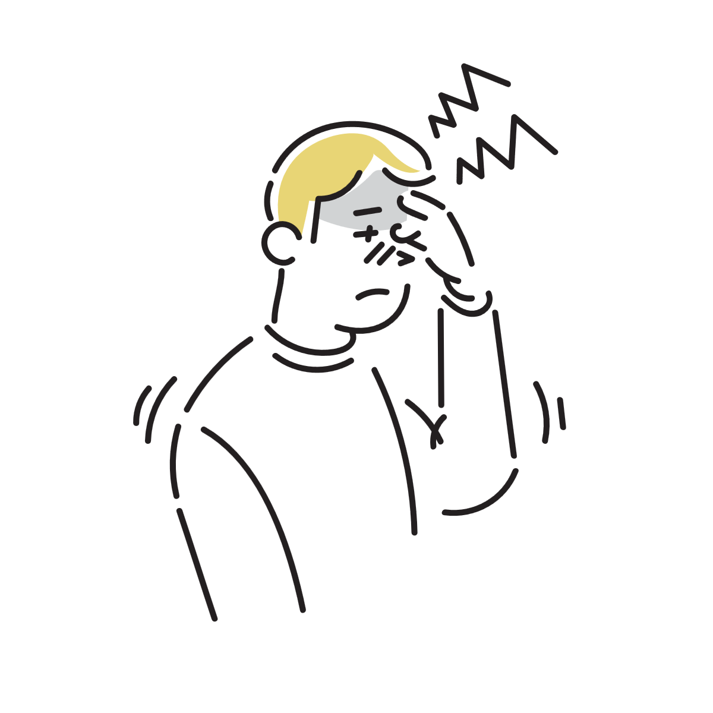
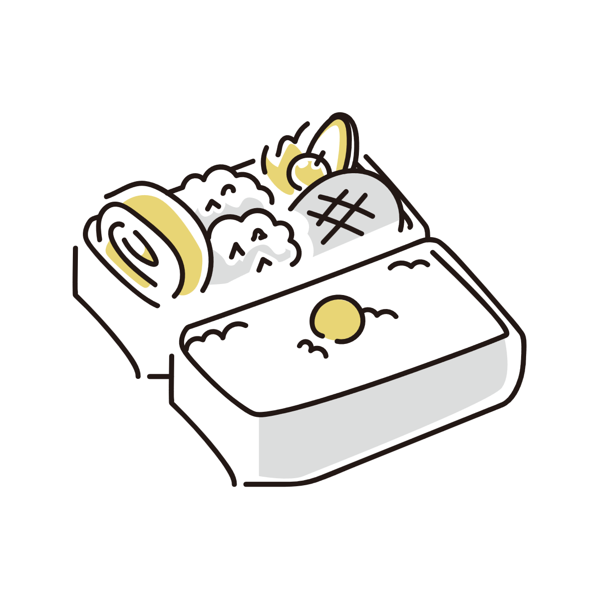
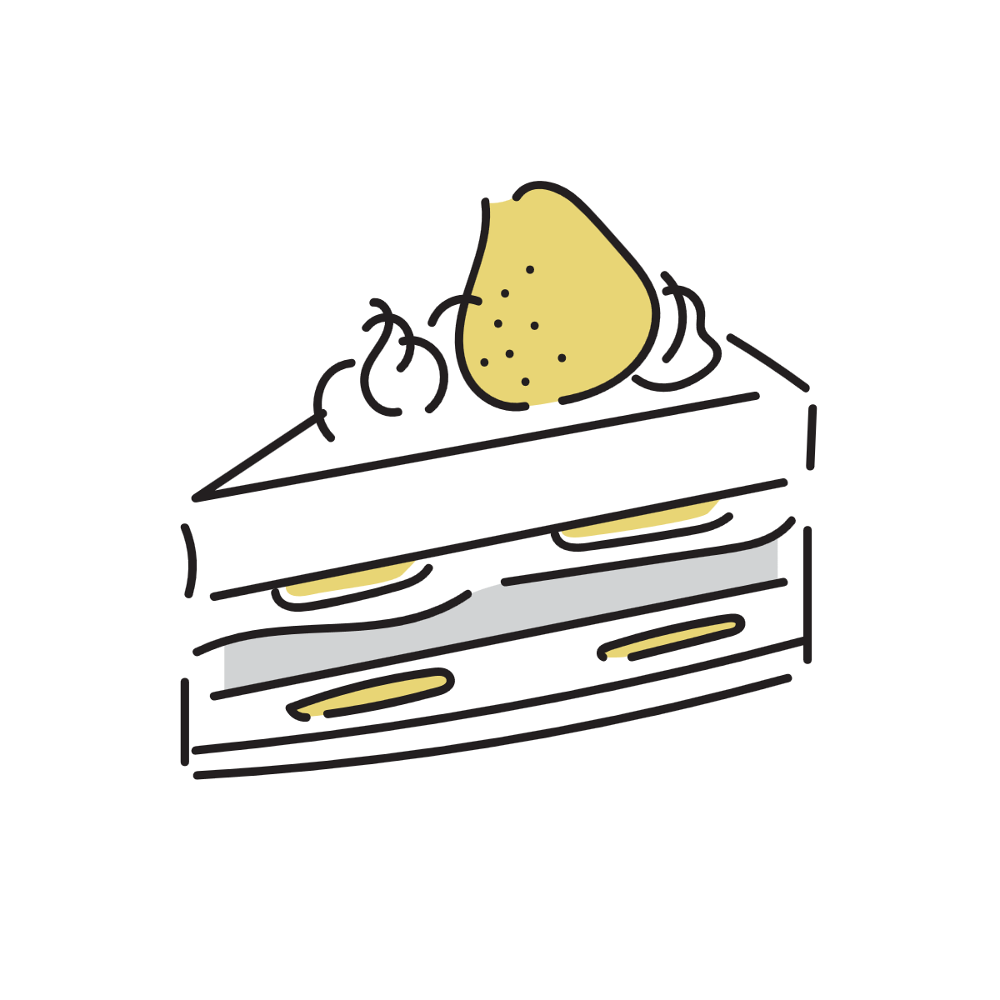

食事をすると頭痛が治るのはなぜ？
空腹のときに頭が重くなったり、何か食べると少し楽になる感覚を経験したことがある人は少なくありません。
また、「食べた直後は治るのに、時間がたつとまた痛くなる」という形で繰り返すこともあります。
これは単なる気のせいではなく、脳のエネルギー状態や自律神経の働きが関係していると考えられています。

脳は常にエネルギーを必要としている
脳は体の中でも特にエネルギー消費が多い器官です。安静時でも多くのブドウ糖を使い続けています。
そのため、長時間食事を取らなかったり、朝食を抜いたりすると、体は徐々にエネルギー不足に近い状態へ傾いていきます。
実際には極端な低血糖でなくても、血糖の変化や空腹ストレスによって集中力低下、だるさ、頭痛のような症状が出ることがあります。
特に疲労や睡眠不足が重なると、こうした変化に敏感になりやすくなります。

食事をすると頭痛が軽くなる理由
食事をすると、脳と体にエネルギーが補給されます。それによって空腹状態による負担が和らぎ、頭痛が軽減することがあります。
血糖の低下傾向が落ち着く
食事によって糖質が補給されると、血糖状態が安定しやすくなります。
すると脳へのエネルギー供給が改善し、ぼんやり感や頭の重さが軽くなることがあります。
自律神経の緊張が和らぐ
空腹は体にとって軽いストレスでもあります。
長時間の空腹では交感神経が優位になり、体が「エネルギー不足に備える状態」へ傾くことがあります。
食事をすると安心感や満足感が生まれ、副交感神経が働きやすくなるため、緊張型の頭痛が和らぐ場合があります。
カフェインや水分も関係することがある
食事そのものではなく、同時に飲んだ水分やコーヒーによって改善しているケースもあります。
特に軽い脱水やカフェイン切れが関係している場合は、「食べたから治った」というより、別の要素が影響していることもあります。
「食べると治るが、また痛くなる」のはなぜか
食後に一度楽になっても、数時間すると再び頭痛が出てくることがあります。
これは「原因が完全に消えた」というより、一時的に負担が軽減されただけのケースで起こりやすくなります。
エネルギー不足が繰り返されている
食事量が少なかったり、食間が長すぎたりすると、再び空腹状態に近づいていきます。
特に糖質中心の軽食だけの場合は、短時間でまたエネルギー不足感が出ることがあります。
疲労や睡眠不足が根本にある
食事で一時的に回復しても、もともとの疲労や睡眠不足、自律神経の乱れが続いていると、再び頭痛が起こりやすくなります。
つまり食事は「不足を補う」ことはできても、体全体の負担を完全に解消するわけではありません。
甘いものですぐ楽になる場合
チョコレートやジュースなどで急に楽になる場合は、血糖変化への反応が強く関係している可能性があります。
ただし急激な糖分摂取は、その後に再び空腹感やだるさを感じやすくなることもあります。
そのため、極端に甘いものだけで調整するより、主食やたんぱく質を含む食事の方が安定しやすい場合があります。

食事で治る頭痛と、そうではない頭痛
空腹時に起こる軽い頭痛は比較的よくありますが、すべての頭痛が食事と関係しているわけではありません。
片頭痛、緊張型頭痛、眼精疲労、感染症、高血圧など、頭痛の原因はさまざまです。
特に「強い痛み」「吐き気を伴う」「急に悪化した」「手足の異常がある」などの場合は、食事だけで説明しない方が安全です。
空腹による頭痛を防ぐには
基本は、長時間の空腹を避けることです。
朝食を極端に抜かないこと、食事間隔を空けすぎないこと、水分不足を避けることなどが安定につながります。
また、睡眠不足や強い疲労が続くと空腹刺激に敏感になりやすいため、生活全体のリズムも重要になります。
参考情報と注意点
頭痛にはさまざまな原因があります。症状が強い場合や頻繁に繰り返す場合は、医療機関への相談も検討してください。
関連アイテム
軽食や水分補給を整えやすくするアイテムを、今後ここに追加する予定です。